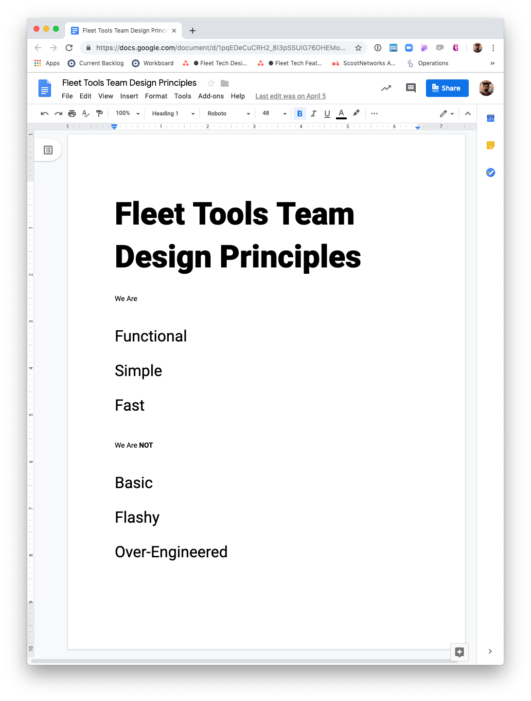

Building a Team at Scoot
When I joined Scoot in the summer of 2018, the company was finally ready for a dedicated team to work on internal tools. Since then I've helped hired a product manager, another designer, and grew the engineering team from 1 to 6. We're continually improving our desktop and mobile tools for managing our fleet of shared electric motor scooters, eBikes, and electric kick scooters. Here's how we got started.
First Step: Discovery
We audited the system and did some qualitative research to understand the problem space. At the time I partnered with my only team member, an engineering manager with experience in Scoot's systems. I led 45 minute sessions with 19 different users, across customer service, city fleet and city managers, and field service supervisors. As well as shadowed fleet technicians and customer service reps while they performed their daily tasks.

There were some strong pain points and patterns.
We learned that although some of the tools were difficult to use, there were no major point points for customer service reps. They were able to look for riders, help them with payment issues, and occasionally turn on a scooter for them.
Tech's in the field had complex troubleshooting workflows with limited access to the data they needed.

We mapped out all the major workflows.
Through hours and hours of shadowing we learnt that a lot of field technicians were struggling to use a poorly formatted desktop tool on their mobile devices to determine what work needed to be accomplished, and find the vehicles in the field to fix them.

It wasn't a question of what we could improve. There was a long list of obvious improvements. It was more a question of what should we do first, and why.
The choice to do some up front research was key to understanding our priorities.
Charged vehicles = more rides.
Unlike some competitors, Scoot maintains higher standards of safety by getting our own technicians to do a safety check on every vehicle that is re-charged. This happens for thousands of vehicles every single day.
Now that we had our focus, we had to get sell our priorities to our key stakeholders.
We held a team kickoff and invited all our key internal users and stakeholders. We shared what we had learned, what the state of our current tools are, and our short term and long term roadmap. Some had to deal with harder news, like our CS team, that won't be getting better tools anytime soon.

Then we defined our Design Principles by running a generative group exercise, then documented them in a central place. Now we could start to go full steam ahead with feature work.
We needed to quickly provide value, so that meant adopting a very learn process of ideating, testing quickly, shipping early, getting feedback and learning, and iterate and refine.
We closely tracked our roadmap and planned major releases.

Everyone rotated through weekly shadowing to build empathy within our team.
We created a weekly shadowing rotation, with a simple form to fill out and share with the team. A great by-product of this was how much of a feedback culture we were creating with our users. We also created a dedicated slack channel for questions and feedback every day. We tracked bugs with Insta Bug to collect data and feedback constantly within our app.

We developed a scoping process to ensure we were taking on projects that were de-risked, empowered team members with the right information, and had clear deliverables.
In a short couple of months we had built a react-native app that did automated route planning for low charge vehicles that needed a new battery.
After that, we started planning out our roadmap to support city expansion, create new automated tasks like picking up and dropping off vehicles, and simplifying the process of performing actions on a vehicle. See the case study for Vehicle Actions here.